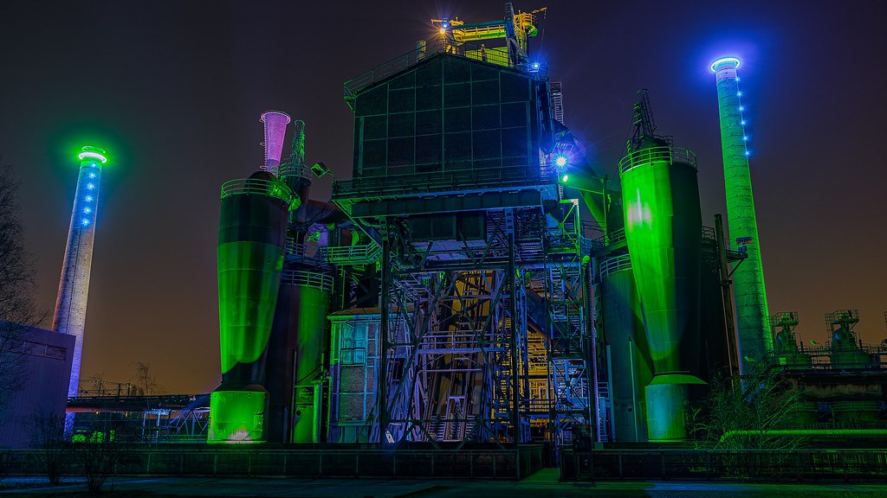
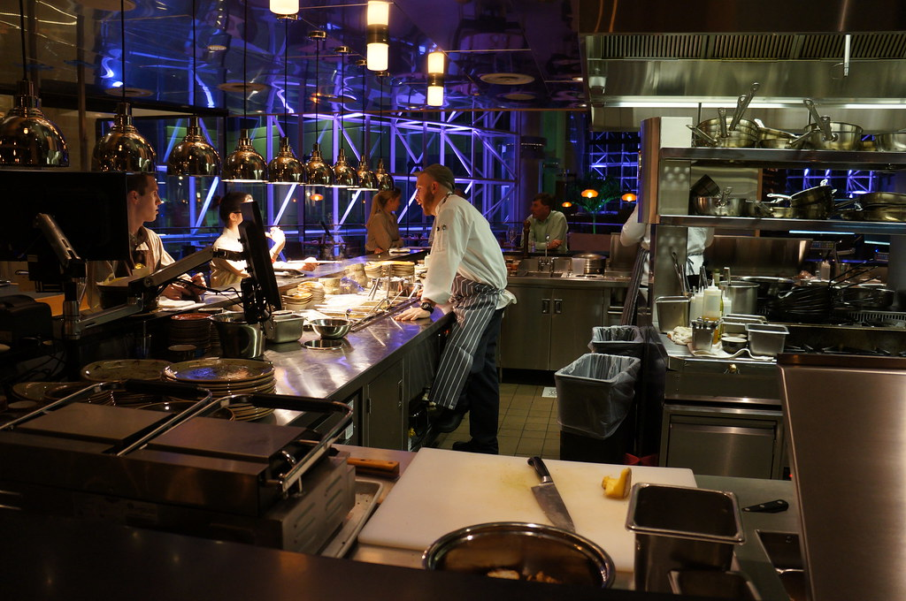
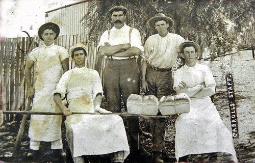
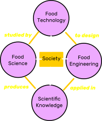

FS2006: Food Process
Design & Optimisation
Dr Shane V Crowley
Press down for controls and right to progress
Interacting with the Slides
📺Full screen: press the F key
🎮View video controls: hover cursor over video
👩🎨 Draw: click icon or press C
🌈Pen colour: press X to cycle and Y to revert
💁 Options and Info: click icon or press M
To view the video just follow the link:
👉https://youtu.be/DmUpzHQTFCE
Go to the class poll 📊
Processing can be the transformation of. . .
- Inedible to edible
- Distasteful to palatable
- Wasteful to resourceful
Industrial
Culinary
Physiological
Our working definition
A set of events
that are ordered logically
to fulfill a specified purpose
Processes as algorithms
- Input
- Output
- Definiteness
- Finiteness
- Effectiveness
Should have:
The Artisan and the Industrial
From Artisinal to Industrial
- Artisans dominated for a long period 🎨
- Depended on tacit knowledge of a master 👨🍳
- Taylor: shift from craft- to mass-production 🚙
- Ford: shift to mass-consumption ⏲️
Break process into sub-processes, divide mastery between workers,
standardise the product, make the process efficient
Consequences for food processing
The production of commodity goods is driven by common goals: including scale, continuity and quality
The industry remains, however, an interesting mixture of tradition and technology (see whiskey)
Are there still masters?
Mastering food processing
as a scientist means learning
the general principles
that apply to all processes
A general principle
$$\color{orange}{E} = \frac{\color{violet}{UO}}{\color{aqua}{TI}}$$
Like most important principles this is most clearly depicted mathematically
What is process intelligence?
Design Considerations: Interactions
$$(2+3)+1 = 2+(3+1)$$
$$(egg+sugar)+milk = egg+(sugar+milk) \ ???$$
Reality can sometimes be messier than maths
In Processing Order Matters
?
Solving inverse problems
Forward: $$cause \rightarrow effect$$
Inverse: $$effect \rightarrow cause$$
Goals of this module
- Provide you with general tools and ideas
- Give you real examples of food processes
- Develop your "feel" for maths and physics
- Prepare you better for specific industry roles
Boring stuff
- Practicals: 7 practicals (reports worth 15%)
- Lectures: mix of in-person and virtual
- Exams: 1 "in-class" test (15%), 1 formal (70%)
- Notes: extra detail provided for specific topics
Read the syllabus for the specifics - don't "what's a syllabus?" me in three months😄
Next lecture
Food Physics
shane.crowley@ucc.ieGo back to the first slide 👈